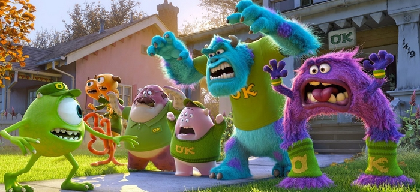

Top 5 Melhores Filmes da Pixar
Toy Story (1995)

O primeiro longa-metragem da Pixar, Toy Story foi o início de uma era mágica para o estúdio. O filme
trazia um conflito básico envolvendo brinquedos que ganham vida quando o dono não está por perto, e uma
questão de ciúmes por parte de Woody com a chegada de um novo brinquedo, Buzz Lightyear.
O conflito se intensifica e, graças a uma trama de Woody, Buzz se perde, e logo em seguida, Woody se
junta a ele em uma cruel aventura que passa por uma pizzaria até a casa do vizinho do dono dos dois, que
mutila seus brinquedos. A trama encantou gerações e foi o início da franquia mais popular do estúdio.
Ratatouille (2007)
Quem diria que um ratinho poderia ser um grande cozinheiro? Ratatouille conta a história de Remy, que
viaja para Paris e acaba se metendo em um dos maiores restaurantes da França, onde precisa ajudar um
atrapalhado cozinheiro a conquistar seu espaço.
O filme é um grande passo visual da Pixar, devido a toda a construção de cenário na França, e conta com
uma história bem interessante. Destaque para as cenas que mostram as sensações provocadas pelos diversos
sabores de comidas, que são momentos verdadeiramente inventivos do estúdio.
Monstros S.A. (2001)

Se esse filme consegue provar algo é que monstros também conseguem ser adoráveis. A história gira em
torno de uma fábrica em que monstros trabalham assustando crianças para recolher energia de grito e
sustentar seu modo de vida no mundo dos monstros.
Tudo começa a virar de ponta a cabeça quando uma criança acaba parando nesse mundo, e Mike e Sulley
precisam devolvê-la antes que o mundo perceba. O filme é uma lição sobre como superar adversidades e
encontrar soluções diferentes para o mesmo problema, e de quebra, rendeu um prelúdio, Universidade
Monstros.
Toy Story 2 (1999)
A primeira continuação do clássico Toy Story, Toy Story 2 vem com uma trama muito mais amadurecida e
diferenciada. Dessa vez, ele lida com abandono e com a pouca importância que damos para as coisas
pequenas da vida.
O filme consegue trazer uma núcleo de diversão ainda maior, e envolver um problema que é mais intenso
que o do primeiro filme, além de contar com aliados e antagonistas inesperados.
Divertida Mente (2015)
O mais recente dessa lista, embora não seja o último lançado pela Pixar, Divertida Mente é provavelmente
o trabalho mais inovador do estúdio. A história busca representar o interior da cabeça de uma jovem
menina que acabou de se mudar para outra cidade... e o foco é em seus cinco principais sentimentos:
Raiva, Nojinho, Medo, Alegria e Tristeza.
Esses sentimentos começam a ter atrito entre si, e isso provoca toda uma reviravolta emocional na
protagonista do filme, que tem que lidar com amadurecimento, esquecimento e dar um jeito de conciliar
suas emoções para não cair em profunda depressão.
Top 5 Piores Filmes da Pixar
Carros 2 (2011)
Este é, disparado, o pior filme do estúdio, e também a pior franquia da Pixar. A bilheteria do primeiro
foi bem, mas não foi um estouro. Entretanto, a justificativa para uma continuação é bem clara – vender
produtos licenciados. A Disney/Pixar ganhou muito dinheiro com a venda de brinquedos, cadernos, canecas,
etc. Com um novo filme, mais personagens são inseridos, assim mais produtos são lançados e o lucro
cresce. Mate toma o lugar de McQueen como protagonista do longa, o que não favorece para construir um
filme melhor. Para o público infantil ele funciona excelentemente, mas não para a família toda, faltando
emoção e criatividade.
O Bom Dinossauro (2015)
Se tem algo a ser exaltado em O Bom Dinossauro é o êxito visual, que prova que a Pixar está num patamar
acima dos seus concorrentes. Infelizmente, o estúdio, que no mesmo ano entregou um de suas melhores
obras (Divertida Mente), conseguiu também entregar, meses depois, um dos piores longas de seu catálogo.
Sim, dá pra quase sentir o cheiro da grama e acreditar que estão filmando a animação num cenário real,
mas isso é o mais próximo de algo verdadeiro. Diferente do que costumeiramente faz, o estúdio trata o
público como se fosse formado somente por crianças de cinco anos. A narrativa é infantilizada, com
desenvolvimento raso, personagens ruins (especialmente os coadjuvantes) e piadas bobas, fazendo Minions
(quase) parecer um filme inteligente. Se havia boas intenções, elas desaparecem rapidamente em O Bom
Dinossauro. Se visualmente é fantástico, o roteiro é o oposto disso, não havendo alma no projeto.
Vida de Inseto (1998)
O segundo filme da Pixar não seguiu a qualidade suprema de Toy Story, mas ainda assim foi importante
para dar continuidade ao estúdio. A trama segue a vida de um formigueiro, cada um com a sua designação.
Mas é claro que nem todos querem seguir isso e nem são compatíveis com suas funções. Flik, o
protagonista, não quer ser mais um mero operário. Ele entra em altas confusões e coloca seus colegas em
perigo, precisando da ajuda de outros insetos. O filme critica a padronização da sociedade e fala também
sobre aceitar o diferente, o que ainda hoje é uma pauta válida.
Carros (2006)
Esse filme faz uma analogia entre pessoas e carros; na verdade, os carros fazem tudo o que fazemos,
incluindo as burrices e a falta de educação com os outros. Relâmpago McQueen está começando a carreira
nas corridas, e na sua primeira temporada da Copa Pistão ele já pretende vencer para realizar o sonho de
trabalhar com a Dinoco, melhor e principal marca da corrida.
Acontece que o desejo pela vitória acaba atrapalhando Relâmpago, que pensa que pode se virar sozinho na
competição sem uma equipe, e na ultima volta da corrida, prestes a vencer, ele acaba com os dois pneus
traseiros estourados e gera um empate com o Rei e Chicks. A corrida para desempatar será na Califórnia,
e McQueen quer chegar o quanto antes no local. Sem paradas para descanso, Mack, o caminhão que está o
levando para lá, acaba dormindo na estrada e McQueen fica para trás e vai parar em uma cidadela de
poucos habitantes e nenhum turista, chamada Radiator Springs. Lá ele conhece carros mais antigos e
humildes, acaba destruindo a rua principal da cidade e é obrigado a reconstruí-la. Ele aprende na marra
o que é companheirismo e acaba simpatizando com os habitantes.
Universidade Monstros (2013)

Muitas continuações não chegam aos pés do filme original, ou em alguns casos acabam diminuindo o legado
da franquia. Felizmente, isso não é o que acontece aqui. Na verdade, Universidade Monstros não pode ser
chamado de continuação, podendo ser denominado como prelúdio. O longa vai a fundo na vida de Sulley e
Mike em sua época de faculdade, com um roteiro bem amarrado e nada óbvio. Chama a atenção o fato de uma
animação conseguir mexer em temas delicados como o bullying. Todo o enredo é bem eficaz e funciona
perfeitamente como uma boa história de origem.